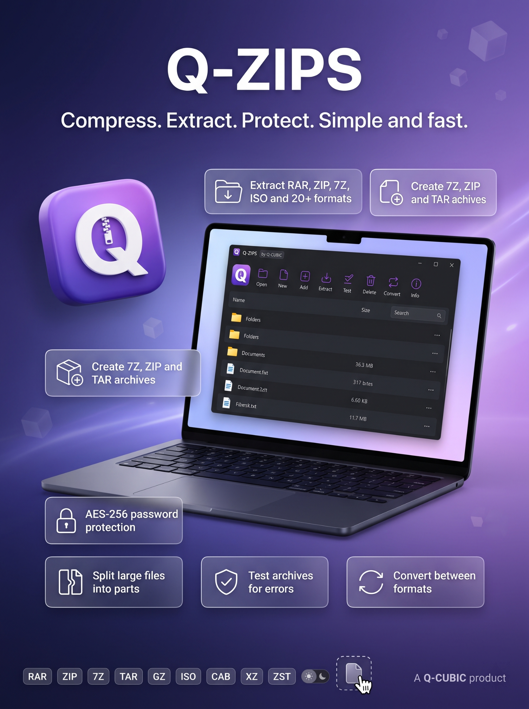

01 / Desktop software
Q-ZIPS
Archive creation, extraction and protection for Windows.
Q-Cubic presents / Q-ZIPS 1.0
Less space. More possibility. Compress, extract and protect your archives with Q-ZIPS for Windows.
A little order for your files.
Made for your archives
Extract RAR, ZIP, 7Z, ISO and 20+ formats. Create 7Z, ZIP and TAR archives.
Formats and features shown are based on the Q-ZIPS product artwork. Available operations depend on the archive format.
01 / The software
Six practical tools for the work between saving, sharing and opening.
Create / 7Z · ZIP · TAR
Bring files and folders into a single archive. Choose 7Z, ZIP or TAR for the archive you want to make.
Feature illustration · not an interactive version of the app
02 / Keep it protected
AES-256 password protection
Add password protection to supported archives before sharing sensitive files. Use a strong, unique password and share it separately from the archive.
Read the privacy notes03 / The people behind the product
Visit Q-CubicQ-ZIPS is one of our creations. From the desktop software to the website you’re exploring, this is a look at what we make.

01 / Desktop software
Archive creation, extraction and protection for Windows.
q-zips / product experience
02 / Product website
Responsive design, interactive storytelling and a direct software download. You’re exploring it right now.
Explore Q-CubicReady when you are
A desktop archive utility from Q-CUBIC.
Download the Windows installer to get started.
Save the .exe file to your Windows PC.
Check the file details below. If you choose to proceed, open the installer and follow its prompts.
Choose an archive to open or files to pack.
Version 1.0.0
Q-ZIPS-Setup-1.0.0.exe
This installer is unsigned. Windows or your browser may display a warning. Verify the source before running it; do not disable security protections.
SHA-256 identifies this exact file. A matching hash confirms file integrity, not software safety.
8CB20645D71C495C36653C7A68C3889C787C22EC17020A09B134A59B7B4DA88EDownload checksum fileMinimum Windows version, processor architecture and installed disk requirements have not been confirmed. The installer was inspected for metadata only, not executed or security-audited.
Before you download
No. This website introduces the desktop application and provides its Windows installer. The feature illustrations do not process files.
The product artwork lists 7Z, ZIP and TAR for creation. It lists RAR, ZIP, 7Z, ISO and more than 20 formats for extraction. Encryption and conversion availability depend on the format.
No. This website has no file-upload controls, accounts, analytics scripts or advertising trackers. Hosting infrastructure may process standard request information. The application's data handling has not been independently verified; see the privacy notes.
Only the Windows .exe installer is provided here. The laptop in the promotional artwork is an illustration and does not establish macOS support.
Check that you trust the source, compare the SHA-256 checksum if needed, and review any installer terms and Windows warnings. This package is unsigned. A signature status or checksum is not a malware scan.
Pricing, licensing and source availability have not been confirmed. Review any terms provided with the installer before use. This page does not claim a free or open-source license.